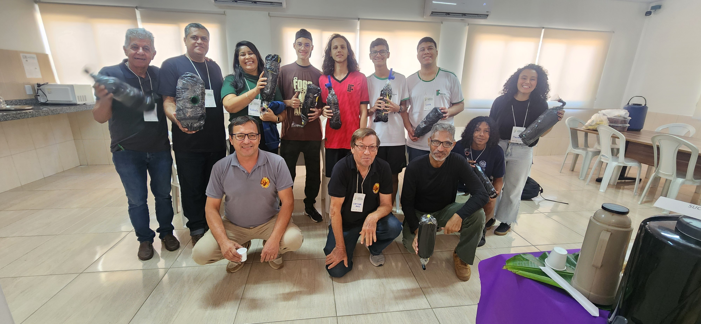
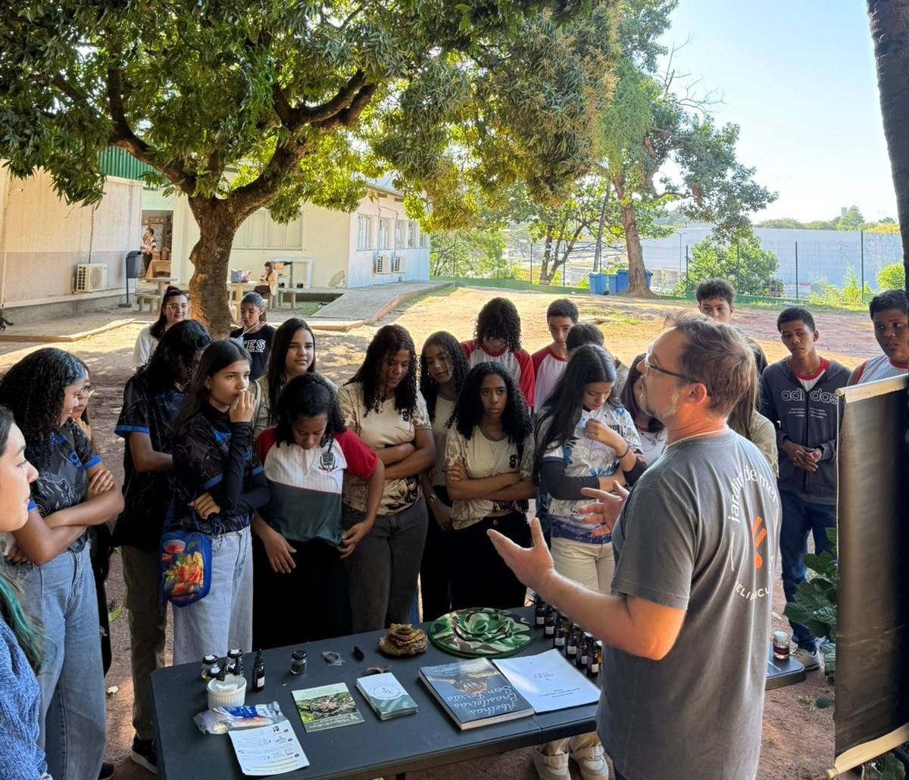
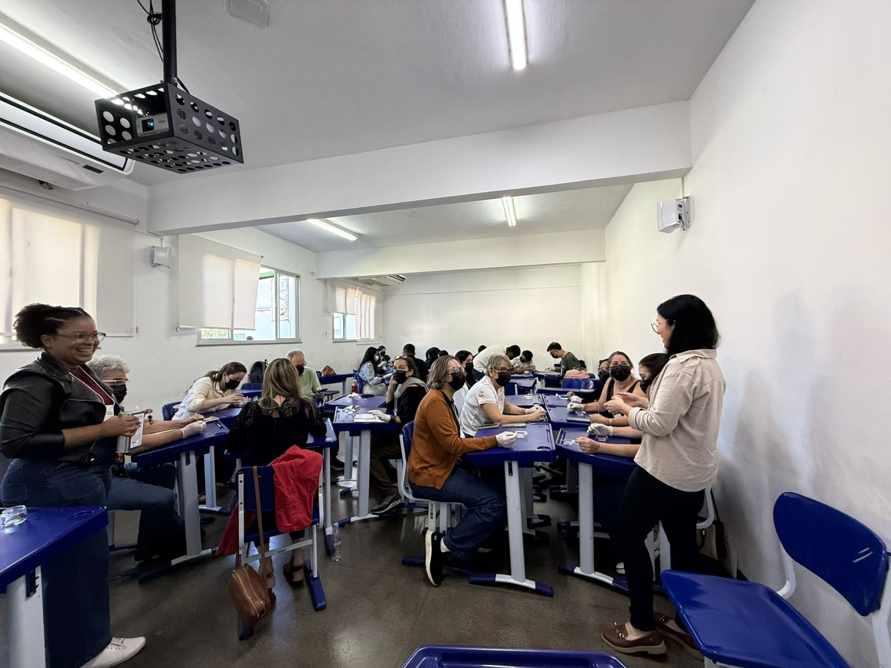
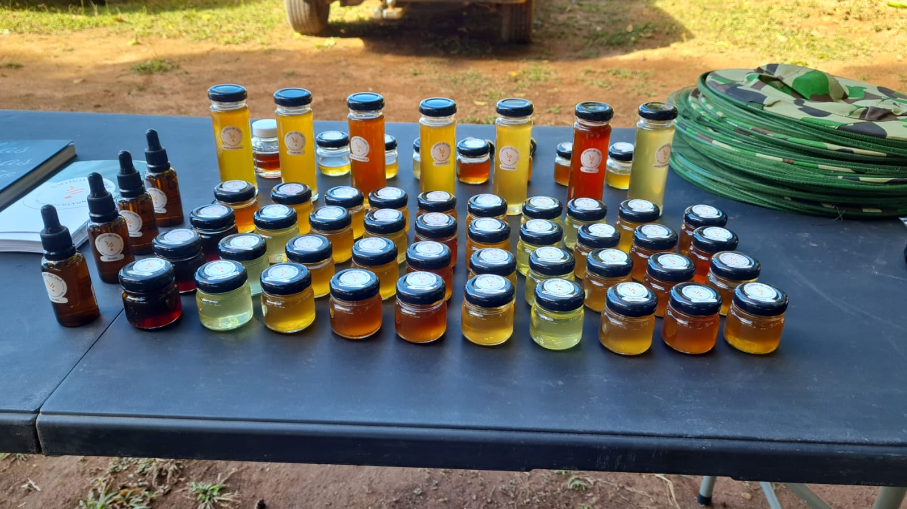

Meliponário Didático
Transformando a criação de abelhas nativas sem ferrão em instrumento pedagógico, inovação científica e preservação da biodiversidade no Ifes Campus Viana.
Um Laboratório Vivo no Campus
O Meliponário Didático do IFES Campus Viana nasce como um espaço de convergência entre o conhecimento científico e a prática ambiental. Diferente da apicultura tradicional, a meliponicultura dedica-se às Abelhas Sem Ferrão (ASF), espécies nativas do Brasil que desempenham um papel fundamental na polinização da flora nativa e de diversas culturas agrícolas.
O espaço abriga colmeias de espécies como Jataí, Uruçu-Amarela e Mandaçaia, permitindo a observação direta da organização social das colônias, da arquitetura dos potes de mel e própolis, e do comportamento das operárias. Mais do que a produção de mel, o objetivo principal do meliponário é servir de sala de aula ao ar livre para a comunidade acadêmica e externa.

Protagonismo Discente e Educação Ambiental
Um dos pilares do projeto é a formação de estudantes multiplicadores. Os alunos voluntários e bolsistas do projeto assumem a liderança na mediação de visitas guiadas para turmas da educação básica de Viana e municípios vizinhos, transmitindo conceitos sobre ecologia, conservação e agroecologia.
Nas oficinas práticas, os visitantes aprendem a confeccionar iscas pet para captura ética de enxames, compreendem a importância de não utilizar agrotóxicos em jardins urbanos e acompanham o manejo seguro de caixas racionais.

Visitantes em momento formativo.
I Congresso de Meliponicultura e Educação Ambiental
O Meliponário Didático consolidou sua relevância ao sediar o I Congresso de Meliponicultura e Educação Ambiental. O evento reuniu pesquisadores, produtores rurais, educadores e comunidade para debater avanços na meliponicultura, serviços de polinização e geração de renda sustentável.
Durante o congresso, além das apresentações de artigos e banners científicos, os participantes participaram de feiras de trocas de experiências, degustação guiada de méis de diferentes espécies nativas e minicursos práticos ao ar livre.


Degustação dos diferentes tipos de mel de abelhas nativas e interação dos congressistas nas oficinas do evento.
Inovações e Expansão Futura
O projeto continua expandindo suas fronteiras tecnológicas e pedagógicas. Atualmente, novos subprojetos estão em desenvolvimento para integrar o meliponário aos cursos técnicos e de graduação do campus:
- Monitoramento Inteligente (IoT): Instalação de sensores de temperatura, umidade e peso dentro das caixas didáticas para estudo do microclima interno das colmeias.
- Trilha Interpretativa dos Polinizadores: Mapeamento e plantio de espécies vegetais melíferas ao redor do campus para criar um corredor ecológico alimentício.
- Análise Qualitativa de Méis e Própolis: Parceria com laboratórios para caracterização das propriedades físico-químicas e medicinais dos produtos derivados da meliponicultura.